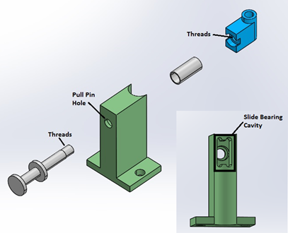

This procedure describes how to lubricate the wash carousel or wheel turcite bearings.
Perform this procedure when:
- System Check failed (especially unwashed portion)
- Intermittent wash carousel or wheel motion errors
-
Remove wash wheel turcite bearing assembly from analytical module.
-
Disassemble turcite bearing assembly.
-
Clean the following with Polyester Texwipe Swabs (PN: 104838) and alcohol wipes:
- Pull pin and slide bearing threads
- Tensioner block slide bearing cavity
- Pull Pin Hole

-
Apply Lubricant
- Apply 3 in1 oil/lubricant (PN: 986410) to swab.
- Using the lubricated swab, apply a thin coat of lubricant to the following locations:
- Pull pin hole
- Left and right sides of slide bearing cavity
- Top and bottom center ridges in slide bearing cavity
-
Re-assemble turcite bearing assembly and install back into analytical module.
-
Once assembly is installed, verify the pull pin does not bind or stick when pulled and released.